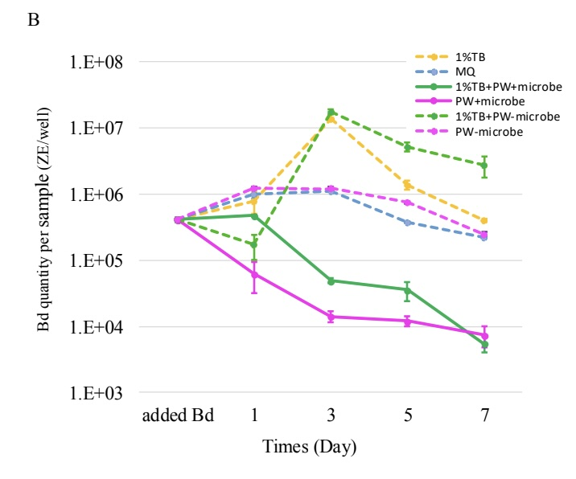

## read in and clean datalibrary(tidyverse) # for cleaning and viewing datalibrary(here) # for importing datalibrary(ggpubr)library(rstatix)library(ggplot2)library(car)library(multcomp)library(nlme)fig_2b <-read.csv(here("data", "final_NCOS_2024_reformatted_for_R.xlsx - Fig2B.csv"))fig_3b <-read.csv(here("data", "final_NCOS_2024_reformatted_for_R.xlsx - Fig3B.csv"))fig_4b <-read.csv(here("data", "final_NCOS_2024_reformatted_for_R.xlsx - Fig4B.csv"))
Data reformatting and cleaning
Code
fig2b_summary <- fig_2b %>%group_by(day, sample_ID) %>%reframe(mean =mean(adh_plus_sup), # calculate the meann =length(adh_plus_sup), # count the number of observationsdf = n -1, # calculate the degrees of freedomsd =sd(adh_plus_sup), # calculate the standard deviationse = sd/sqrt(n), # calculate the standard error )
Fig 2b
I am not sure what the experimental set up is, but here is a re-creation of Renwei’s excel figure!
Renwei’s figure:

ggplot version:
Code
fig2b_summary %>%# reorder to match Renwei's plotmutate(sample_ID =factor(sample_ID, levels =c("1%TB", "MQ", "1%TB+PW+microorganism", "PW+microorganism", "1%TB+PW-microorganism", "PW-microorganism", "Added Bd"))) %>%mutate(line_type =case_when( sample_ID =="1%TB"~"dotted", sample_ID =="MQ"~"dotted", sample_ID =="1%TB+PW+microorganism"~"solid", sample_ID =="PW+microorganism"~"solid", sample_ID =="1%TB+PW-microorganism"~"dotted", sample_ID =="PW-microorganism"~"dotted", sample_ID =="Added Bd"~"solid",TRUE~"solid"# Default case, if any )) %>%ggplot(aes(x = day, y = mean, color = sample_ID)) +geom_point(size =2) +geom_errorbar(aes(ymin = mean - se, # plot the standard errorymax = mean + se),width =0.1) +geom_line(aes(linetype = line_type), show.legend =FALSE) +scale_y_log10(limits =c(1e3, 1e8), breaks =c(1e3, 1e4, 1e5, 1e6, 1e7, 1e8)) +# vibeslabs(x ="Day",y ="Bd Quantity per sample (ZE/well)") +scale_color_manual(values =c("1%TB"="goldenrod", "MQ"="blue", "1%TB+PW+microorganism"="darkolivegreen3", "PW+microorganism"="magenta", "1%TB+PW-microorganism"="palegreen4", "PW-microorganism"="palevioletred1","Added Bd"="darkgrey")) +# Assign specific colors to match RC's plotscale_linetype_manual(values =c("dotted"="dashed", "solid"="solid")) +theme_minimal() +theme(panel.grid.major.x =element_blank(), # Remove major vertical grid linespanel.grid.minor.x =element_blank()) +# Remove minor vertical grid linesscale_x_continuous(breaks =c(0, 1, 3, 5, 7))